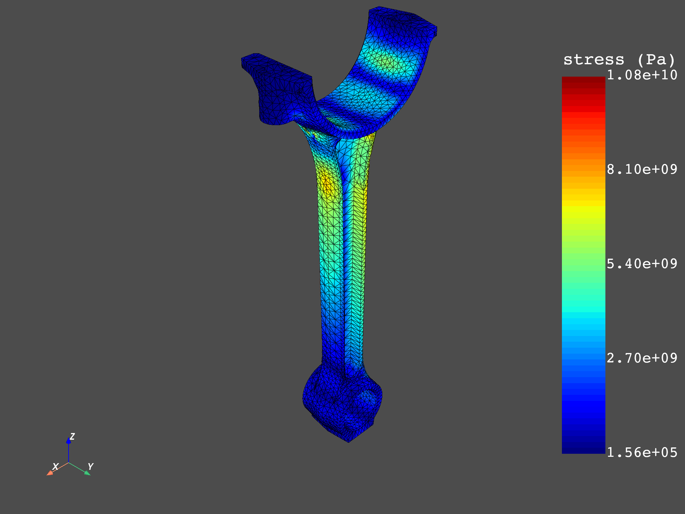

Note
Click here to download the full example code
Average across bodies#
In multibody simulations, some nodes may be shared by the bodies at their interfaces, but the values of the results (for example stresses or strains) calculated at these nodes may differ between the bodies. This can cause discontinuous plots, given that a single node will have multiple values for a variable. To avoid this, you can average these results across the bodies of the model.
This example demonstrates how to average across bodies in DPF when
dealing with Nodal variables. It also illustrates how the end results
of a postprocessing workflow can be different when averaging and when not.
Note
This example requires DPF 6.1 or above. For more information, see Compatibility.
Import the necessary modules
from ansys.dpf import core as dpf
from ansys.dpf.core import operators as ops
from ansys.dpf.core import examples
Load the simulation results from an RST file and create a model of it.
analysis = examples.download_piston_rod()
model = dpf.Model(analysis)
print(model)
DPF Model
------------------------------
Static analysis
Unit system: MKS: m, kg, N, s, V, A, degC
Physics Type: Mechanical
Available results:
- displacement: Nodal Displacement
- reaction_force: Nodal Force
- stress: ElementalNodal Stress
- elemental_volume: Elemental Volume
- stiffness_matrix_energy: Elemental Energy-stiffness matrix
- artificial_hourglass_energy: Elemental Hourglass Energy
- thermal_dissipation_energy: Elemental thermal dissipation energy
- kinetic_energy: Elemental Kinetic Energy
- co_energy: Elemental co-energy
- incremental_energy: Elemental incremental energy
- elastic_strain: ElementalNodal Strain
- structural_temperature: ElementalNodal Structural temperature
------------------------------
DPF Meshed Region:
33337 nodes
18235 elements
Unit: m
With solid (3D) elements
------------------------------
DPF Time/Freq Support:
Number of sets: 3
Cumulative Time (s) LoadStep Substep
1 1.000000 1 1
2 2.000000 2 1
3 3.000000 3 1
To visualize the model and see how the bodies are connected, extract their
individual meshes using the split_mesh operator with the mat (or “material”)
property.
mesh = model.metadata.meshed_region
split_mesh_op = ops.mesh.split_mesh(mesh=mesh, property="mat")
meshes = split_mesh_op.outputs.meshes()
meshes.plot(text="Body meshes")
As can be seen in the preceding image, even though the piston rod is one single part, it is composed of two different bodies. Additionally, their interface shares common nodes.
Averaging across bodies with DPF#
# To compare the results of averaging across bodies and not averaging,
define two workflows.
The variable of interest is the Von Mises stress field, which is
calculated by applying the eqv_fc operator on the
stresses extracted from the model.
Workflow for not averaging across bodies#
Computing Von Mises stresses without averaging across the bodies of the
model requires the stresses to be extracted separately for each body.
To do this in DPF, pass a scopings container the stress operator that
contains the elements of each body in scopings, separated by the mat label
split_scop_op = ops.scoping.split_on_property_type()
split_scop_op.inputs.mesh.connect(mesh)
split_scop_op.inputs.requested_location.connect(dpf.locations.elemental)
split_scop_op.inputs.label1.connect("mat")
print(split_scop_op.outputs.mesh_scoping())
DPF Scopings Container with
2 scoping(s)
defined on labels ['mat']
Set the time set of interest to the last time set:
time_set = 3
Extracting the stresses for each body of the simulation:
stress_op = ops.result.stress()
stress_op.inputs.time_scoping.connect(time_set)
stress_op.inputs.data_sources.connect(model)
stress_op.inputs.mesh_scoping.connect(split_scop_op)
stress_op.inputs.requested_location.connect(dpf.locations.elemental_nodal)
Proceeding with the workflow to obtain Nodal Von Mises stresses:
eln_to_n_op = ops.averaging.elemental_nodal_to_nodal_fc()
eln_to_n_op.inputs.fields_container.connect(stress_op)
von_mises_op = ops.invariant.von_mises_eqv_fc()
von_mises_op.inputs.fields_container.connect(eln_to_n_op)
print(von_mises_op.outputs.fields_container())
DPF stress(s)Fields Container
with 2 field(s)
defined on labels: mat time
with:
- field 0 {mat: 1, time: 3} with Nodal location, 1 components and 17281 entities.
- field 1 {mat: 2, time: 3} with Nodal location, 1 components and 17610 entities.
As you can see, the final Von Mises stresses fields container has the mat
label with two different entries, meaning that it holds data for two separate bodies.
Finally, define this workflow as a function for better organization and
ease of use:
def not_average_across_bodies(analysis):
# This function extracts the ElementalNodal stress tensors of the simulation
# for each body involved, averages them to the nodes and computes Von Mises
model = dpf.Model(analysis)
mesh = model.metadata.meshed_region
time_set = 3
split_scop_op = ops.scoping.split_on_property_type()
split_scop_op.inputs.mesh.connect(mesh)
split_scop_op.inputs.requested_location.connect(dpf.locations.elemental)
split_scop_op.inputs.label1.connect("mat")
stress_op = ops.result.stress()
stress_op.inputs.time_scoping.connect(time_set)
stress_op.inputs.data_sources.connect(model)
stress_op.inputs.mesh_scoping.connect(split_scop_op)
stress_op.inputs.requested_location.connect(dpf.locations.elemental_nodal)
eln_to_n_op = ops.averaging.elemental_nodal_to_nodal_fc()
eln_to_n_op.inputs.fields_container.connect(stress_op)
von_mises_op = ops.invariant.von_mises_eqv_fc()
von_mises_op.inputs.fields_container.connect(eln_to_n_op)
vm_stresses = von_mises_op.outputs.fields_container()
return vm_stresses
Workflow for averaging across bodies#
The workflow for performing averaging across bodies in DPF is similar to to the
one shown above, with the extraction of stresses per body. The difference comes
in the end, where a weighted merge is done between the fields that contain different
values for the mat label to actually average the results across the bodies.
Define a function like the one above:
def average_across_bodies(analysis):
# This function extracts the ElementalNodal stress tensors of the simulation
# for each body involved, averages them to the nodes and computes Von Mises
model = dpf.Model(analysis)
mesh = model.metadata.meshed_region
time_set = 3
split_scop_op = ops.scoping.split_on_property_type()
split_scop_op.inputs.mesh.connect(mesh)
split_scop_op.inputs.requested_location.connect(dpf.locations.elemental)
split_scop_op.inputs.label1.connect("mat")
stress_op = ops.result.stress()
stress_op.inputs.time_scoping.connect(time_set)
stress_op.inputs.data_sources.connect(model)
stress_op.inputs.mesh_scoping.connect(split_scop_op)
stress_op.inputs.requested_location.connect(dpf.locations.elemental_nodal)
eln_to_n_op = ops.averaging.elemental_nodal_to_nodal_fc()
eln_to_n_op.inputs.fields_container.connect(stress_op)
# Mid node weights needed for averaging across bodies
eln_to_n_op.inputs.extend_weights_to_mid_nodes.connect(True)
von_mises_op = ops.invariant.von_mises_eqv_fc()
von_mises_op.inputs.fields_container.connect(eln_to_n_op)
# Merging fields that represent different bodies
merge_op = ops.utility.weighted_merge_fields_by_label()
merge_op.inputs.fields_container.connect(von_mises_op)
merge_op.inputs.label.connect("mat")
# Connecting weights needed to perform the weighted average
merge_op.connect(1000, eln_to_n_op, 1)
vm_stresses = merge_op.outputs.fields_container()
return vm_stresses
In this case, we can see that the output fields container only has one field, indicating that the results of the two different bodies were averaged successfully.
print(average_across_bodies(analysis))
DPF Fields Container
with 1 field(s)
defined on labels: time
with:
- field 0 {time: 3} with Nodal location, 1 components and 33337 entities.
Plot and compare the results#
The two different approaches can be compared. The first plot shows the results when averaging across bodies is not performed, while the second illustrates when it is.
non_avg_stresses = not_average_across_bodies(analysis)
avg_stresses = average_across_bodies(analysis)
meshes.plot(non_avg_stresses)
mesh.plot(avg_stresses)
- 
Finally, the maximum stresses for both cases can be compared:
min_max = dpf.operators.min_max.min_max_fc()
# Non averaged across bodies
min_max.inputs.fields_container.connect(non_avg_stresses)
max_non_avg = max(min_max.outputs.field_max().data)
# Averaged across bodies
min_max.inputs.fields_container.connect(avg_stresses)
max_avg = max(min_max.outputs.field_max().data)
diff = abs(max_avg - max_non_avg) / max_non_avg * 100
print("Max stress when averaging across bodies is activated: {:.2f} Pa".format(max_avg))
print("Max stress when averaging across bodies is deactivated: {:.2f} Pa".format(max_non_avg))
print(
"The maximum stress value when averaging across bodies is PERFORMED \
is {:.2f}% LOWER than when it is NOT PERFORMED".format(
diff
)
)
Max stress when averaging across bodies is activated: 10786714384.57 Pa
Max stress when averaging across bodies is deactivated: 10796069601.08 Pa
The maximum stress value when averaging across bodies is PERFORMED is 0.09% LOWER than when it is NOT PERFORMED
Dedicated Operator#
Note
The operator detailed below is available in Ansys 23R2 and later versions.
Alternatively, those workflows can be automatically instantiated by calling the
stress_eqv_as_mechanical operator, which does exactly the same thing as described
in the functions above, depending on what is passed to the “average_across_bodies” input
pin:
stress_op = ops.result.stress_eqv_as_mechanical()
stress_op.inputs.time_scoping.connect([time_set])
stress_op.inputs.data_sources.connect(model)
stress_op.inputs.requested_location.connect(dpf.locations.nodal)
stress_op.inputs.average_across_bodies.connect(False)
print(stress_op.outputs.fields_container())
DPF stress(s)Fields Container
with 2 field(s)
defined on labels: mat time
with:
- field 0 {mat: 1, time: 3} with Nodal location, 1 components and 17281 entities.
- field 1 {mat: 2, time: 3} with Nodal location, 1 components and 17610 entities.
Total running time of the script: ( 0 minutes 18.221 seconds)